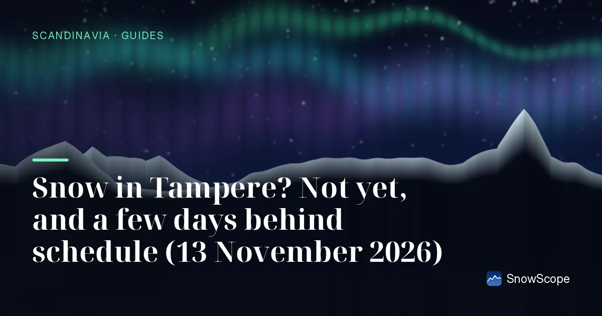
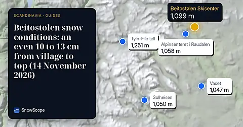

Snow in Tampere? Not yet, and a few days behind schedule (13 November 2026)
Tampere remains snow-free as of Friday 13 November, though a small accumulation appeared at a station less than 50 km away overnight. The region is running behind its typical early-winter rhythm, but the freeze is coming: within two weeks, lasting snow usually arrives in central Finland.
See the live snow forecast for Tampere in the SnowScope appSnow depth, powder alerts and the 3D map, free.
Where the first flakes landed
Only one measurement station near Tampere recorded snow on Friday: Juupajoki Hyytiälä, 48 km to the north-east, reported 2 cm. Everywhere else in the Tampere area—Nokia Tottijärvi to the west, Hattula and Hämeenlinna to the south—the ground remained bare. The city's own weather station saw no snow.
This thin 2 cm at Hyytiälä marks the northern edge of the snow line across Finland on this date. South of latitude 64°, the snow divide becomes sharp. Real snow cover does not yet reach Tampere, but it is close.

How late is Tampere running?
Snow history from 46 past winters shows that Tampere is a week behind schedule. On 13 November, the ground has been white in exactly half of those winters—23 times. In the other half, bare ground continues. The usual date when snow first stays is 10 November, so this year the city is about three days late, which is well within normal variation.
The key point: when snow does come to Tampere in mid-November, it arrives thin. The median depth for this date across those 46 winters is 0 cm. Even in snowy years, 3 cm is a heavy fall. The snow gradually thickens through winter—about 4 cm by 1 December, 7 to 8 cm by mid-December, and roughly 18 cm by mid-January—but early flakes are sparse and fragile.
What the last five winters tell us
Of the five most recent winters on record for Tampere, only one—2023-24—had measurable snow on 13 November: 3 cm. The other four winters (2021-22, 2022-23, 2024-25, 2025-26) all began with bare ground on this date, exactly as today.
This is not unusual. The start of the snow season in Tampere is variable. Some years snow sticks by early November; others wait until late November or even December. What matters is not whether snow arrives on the 13th, but whether it arrives at all during the winter. By January, Tampere almost always has a white cover.
The weekend forecast
Saturday brings grey skies and temperatures barely above freezing, between 0 and 2 °C. A trace of wet snow may fall during the day, mixing with drizzle that totals less than 1 cm of water. Any flakes that land on warm pavement will melt. Sunday becomes drier and milder, climbing to about 6 °C, leaving bare ground again. Monday sees rain moving in, between 3 and 4 mm.
The weekend will not bring lasting snow to Tampere. The ground will be cold and wet, but not white. However, the cycle of frost and wet ground creates risks: leaf litter on forest paths will be slippery, and surfaces that shade late into the morning may hold ice.
What to expect next
Tampere's first snow is not far away. Within the next two weeks, cold air usually pushes far enough south to settle snow across the city. When it arrives, the first few centimetres will be fragile—partly melting on warm days, refreezing at night—but the pattern will have begun.
If you want to see real snow this weekend, Tampere is not the place. The nearest significant white ground is at Oulu, 600 km to the north, where stations measured 7 cm. Rovaniemi also has 7 to 8 cm. Both are still early in their season and not yet at their depth. For Tampere residents, patience is the only option.
Weekend hazards on bare ground
Although snow is absent, Saturday and Sunday bring their own slip risks. Wet leaves and grass will be slick on paths, especially where shade keeps the ground cool. Bridges and elevated walkways often freeze before open terrain. Early morning and dusk are the most dangerous hours.
The lakes around Tampere—Pyhäjärvi and Näsijärvi—are not yet frozen. Do not venture onto any ice that forms in the bays; it is far too thin to hold weight. Wear grip-soled shoes if you plan to walk along the shore or through parks this weekend.
Tips for skiers
- Watch for black ice on bridge surfaces and shaded path edges Saturday morning. Wet leaves, not snow, are the hazard this weekend.
- The lakes are still open water. Any ice on the bays is thin and unsafe; stay off.
- To see snow this weekend, drive north to Oulu or beyond. Tampere's wait will end within two weeks.
- Early snow here is thin and can melt during mild spells. The real snow season builds through December and January.
- Check the forecast again on Monday; the pattern may shift if Atlantic air stays weak.
About these numbers
Resort snow depths are the deepest snow on the resort's upper slopes on the date shown; they are estimates for an area, not a measurement at one point. Forecasts can change. Always read the official avalanche bulletin before going off-piste.
Cite this report
For research, teaching or the press: the numbers and charts are free to reuse under CC BY 4.0 with this citation.
SnowScope (2026), Snow in Tampere? Not yet, and a few days behind schedule (13 November 2026), https://snowscope.app/blog/en/2026/11/tampere-snow-today-13-november-2026.html, accessed 2026-11-13
SnowScope (Atlas Labs). (2026, November 13). Snow in Tampere? Not yet, and a few days behind schedule (13 November 2026). SnowScope snow reports. https://snowscope.app/blog/en/2026/11/tampere-snow-today-13-november-2026.html
BibTeX
@misc{snowscope2026tamperesnowtoday13novemb,
author = {{SnowScope (Atlas Labs)}},
title = {Snow in Tampere? Not yet, and a few days behind schedule (13 November 2026)},
year = {2026},
month = nov,
howpublished = {\url{https://snowscope.app/blog/en/2026/11/tampere-snow-today-13-november-2026.html}},
note = {Published 2026-11-14 13:29 UTC; accessed 2026-11-13}
}· CC BY 4.0 · Methods, data and tools →
Follow Tampere
Free: a message when fresh snow is coming, and the forecast every morning.
More snow reports

On 13 November, Kindsjön station at 425 m near Branäs measured 27 cm of snow while the valley floor stayed bare. Height is everything this week in Värmland.

Beitostølen has 12 cm measured at the weather station on 13 November. The whole ski area sits at the same altitude band, so snow depth barely changes from base to summit.

Book 15-21 December at Åre for the best snow odds before Christmas crowds. 89% of winters had 30 cm at mid-mountain that week. Data from 13 November 2026.